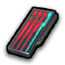

Manderville Weapon Tracker
Relic Progression & Resource Manager
Steps
Full material list — every stage, i615 to i665
Complete Manderville Weapon relic requirements for Endwalker, stage by stage. Quantities below are per weapon (each job you upgrade needs its own set), and every upgrade item costs 500 Allagan Tomestones of Poetics.
1. Manderville (i615)
Needs Endwalker MSQ and the Hildibrand questline through 'The Imperfect Gentleman'. 3 Manderium Meteorites (1,500 Poetics) per weapon.
| Item | Qty needed | How to obtain | Exchange cost |
|---|---|---|---|
| Manderium Meteorite | 3 | Buy from Jubrunnah in Radz-at-Han (X:12.2, Y:10.9) for 500 Poetics each. First weapon via 'Make It a Manderville', every one after via 'Make Another Manderville' (House Manderville Artisan). | 500 Poetics |
2. Amazing Manderville (i630)
Continue the Somehow Further Hildibrand Adventures. 3 Complementary Chondrites (1,500 Poetics) per weapon.
| Item | Qty needed | How to obtain | Exchange cost |
|---|---|---|---|
| Complementary Chondrite | 3 | Buy from Jubrunnah in Radz-at-Han for 500 Poetics each, then turn in with your Manderville weapon via 'The Next Mander-level'. | 500 Poetics |
3. Majestic Manderville (i645)
Continue the Hildibrand story. 3 Amplifying Achondrites (1,500 Poetics) per weapon, and you choose the substats.
| Item | Qty needed | How to obtain | Exchange cost |
|---|---|---|---|
| Amplifying Achondrite | 3 | Buy from Jubrunnah in Radz-at-Han for 500 Poetics each, then turn in with your Amazing weapon via 'In Need of Adjustment'. You pick the substats: two at 293, one at 72 (re-rolling costs 1 more Achondrite). | 500 Poetics |
4. Mandervillous (i665)
Finish the Hildibrand story (includes the trial 'The Gilded Araya'). 3 Cosmic Crystallites (1,500 Poetics) per weapon.
| Item | Qty needed | How to obtain | Exchange cost |
|---|---|---|---|
| Cosmic Crystallite | 3 | Buy from Jubrunnah in Radz-at-Han for 500 Poetics each, then turn in with your Majestic weapon via 'Positively Mandervillous'. Substats: two at 306, one at 72 (re-rolling costs 1 more Crystallite). | 500 Poetics |
| Mandervillous Weapon | 1 | Turn in 3 Cosmic Crystallites and your Majestic weapon to the House Manderville Artisan and pick your substats — the final Endwalker relic! | Quest Complete |
Quantities scale per weapon/job selected — the interactive tracker above multiplies these automatically.

Poetics